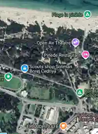
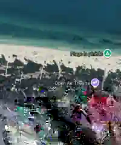

موقع ساحلي نعيد تخيله للتعلّم والمغامرة.
ينطلق مفهوم SAFARI MINDS VILLAGE من بيئة قائمة في الصنوبر، حيث يمكن ربط البحر والمساحات الخضراء ومرافق الترفيه في تجربة تعليمية ومغامرات متكاملة.
من موقع قائم إلى وجهة جديدة.
المشروع لا يبدأ من أرض فارغة، بل من بيئة موجودة تحتاج إلى إعادة تأهيل وربط وظيفي. الهدف هو تمكين الأطفال واليافعين والعائلات والمدارس والشركاء من التعلّم عبر الحركة والطبيعة والتكنولوجيا والثقافة والتحدي.
سيتم نشر الطاقة الاستيعابية والخدمات وإجراءات السلامة ومواعيد الافتتاح وشروط الحجز فقط بعد تأكيدها رسميًا.
البحر
اكتشاف الساحل وتجارب BLUE SEA مع الإشراف والشركاء المناسبين.
الغابة
مهام في الهواء الطلق والملاحظة والعمل الجماعي والتعلم البيئي.
المساحات المشتركة
ورشات وتحديات وثقافة وإعلام وتجارب عائلية.
البيئة المحيطة بالمشروع.
هذه الصور مرجع بصري لسياق الموقع والبيئة المحيطة به، ولا تعني أن كل مرفق ظاهر فيها تابع لتشغيل SAFARI MINDS VILLAGE.


ثمانية عوالم في تجربة واحدة.
SMART MIND • FUTURE LAB • SMART FOREST • BLUE SEA • CHAMPIONS ARENA • TUNISIA EXPERIENCE • SMART RESORT • SPEEDOOO MINDS RADIOOO.
يمكن للصنوبر أن تصبح وجهة من نوع جديد.
مغامرة تعليمية وترفيه عائلي وانفتاح دولي، تنطلق من خصوصية الموقع.
تحدث معنا عن المشروع ←